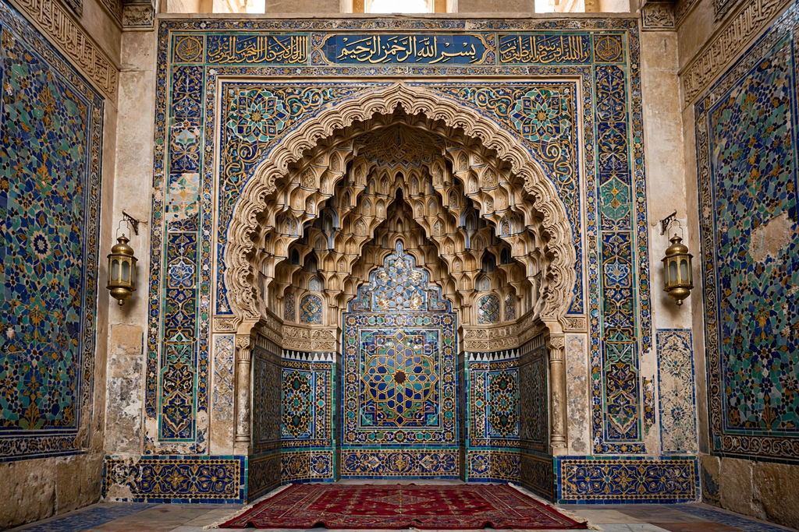

From Wikipedia, the free encyclopedia
| Qibla | |
|---|---|
 The mihrab marks the qibla direction in a mosque | |
| Arabic | قبلة (qiblah, "direction") |
| Direction toward | The Kaaba, Mecca, Saudi Arabia |
| Used for | Salah (prayer), burial, slaughter, mosque orientation |
| Change of qibla | 624 CE (2 AH), from Jerusalem to Mecca |
The qibla (Arabic: قِبْلَة, "direction") is the direction towards the Kaaba in the Grand Mosque (Masjid al-Haram) in Mecca, which Muslims face when performing their prayers (salah). It is fixed as the direction of the shortest path — a great-circle route — from any given point on Earth to the Kaaba, giving a different bearing in different places: roughly southeast in Europe, southwest in eastern North America, northwest in Indonesia.
For the first years after the Hijrah, Muslims prayed facing Jerusalem. In 624 CE (2 AH), according to tradition while the Prophet was leading prayer at the mosque now called Masjid al-Qiblatain ("Mosque of the Two Qiblas") in Medina, revelation (Quran 2:144) commanded the change to Mecca and the Kaaba, Abraham's sanctuary. The change distinguished the young community's identity and centred its worship on Mecca, goal of the Hajj in Dhu al-Hijjah.
Finding the qibla drove major advances in mathematical geography and astronomy: scholars such as al-Biruni computed it by spherical trigonometry from a locality's latitude and longitude relative to Mecca. Folk methods used the sun's position on specific days — around 27/28 May and 15/16 July the sun passes directly over the Kaaba, so shadows point directly away from the qibla anywhere the sun is visible. Mosques mark the direction with the mihrab, a niche in the qibla wall; travellers historically used qibla compasses, and today use apps and great-circle calculations. A well-known wrinkle is that from North America the great-circle route runs northeast, contrary to the intuitive "southeast" of flat maps — a debate settled in favour of the great-circle method by most scholars.
The qibla also orientates the Islamic burial (the deceased laid on the right side facing Mecca), ritual slaughter, and the orientation of mosques worldwide; after wudu, the worshipper's prayer mat is aligned to it for the acts of worship summed up in the Hadith of Gabriel.